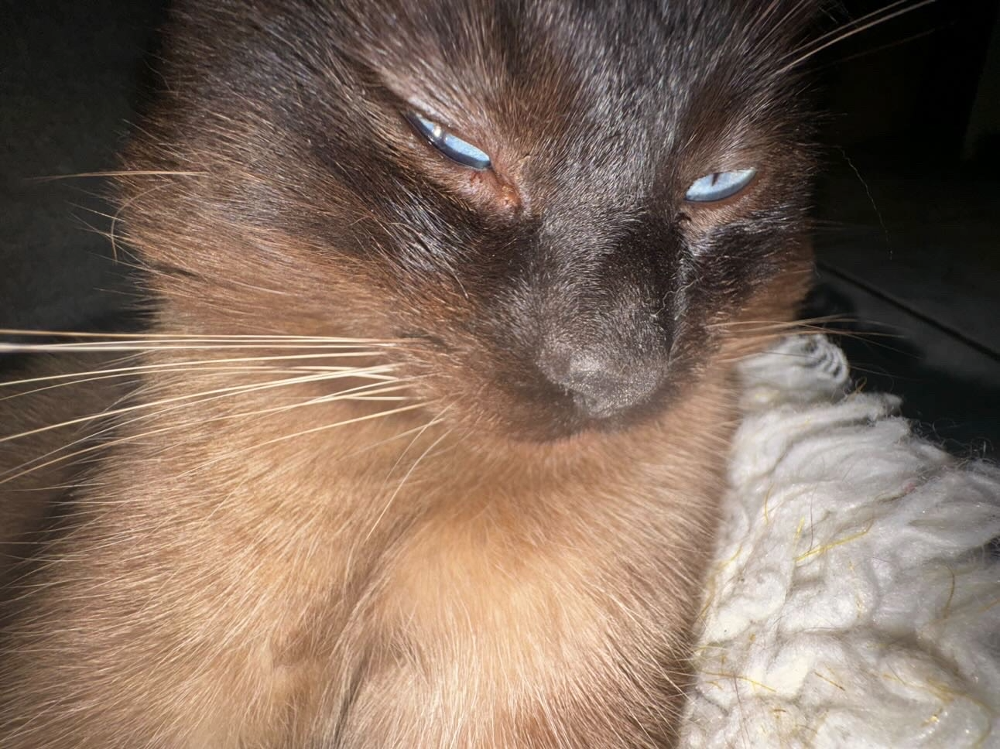

Hello World!
We are both very interested in video game, Siyan play varitis of game like FPS, Action, Simulation.
Jeffrey likes to play FPS games like Valorant and Marvel Rivlas, also his favorite story base game is Death Stranding.

Meet Haru, Jeffery's cat.
Lab X - Subject/Topic
Challenge
The challenges would be trying to understand team building skill as we help each other understand HTMl and CSS as a team.
Problems
Some problems we found when doing the site would be that when tryng to upload an image up to the website, it appeared as an broken image. We tried all we could like changing the file type or rechecking all the work we did and it did not work.
Reflection
The prohject goes very well, we might encounter some issues while working but we all have understand HTML and CSS better during the lab. We make sure we contunue the work with a positive energy.
Results
Overall the porject went pretty well, we have a lot of thought about what should we do other than introducing ourselves. But we both think introducting Jeffery's cat would be interesting.